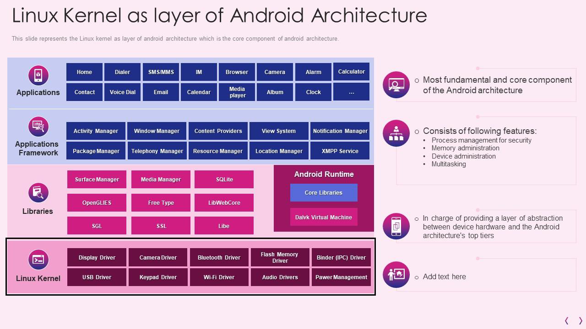
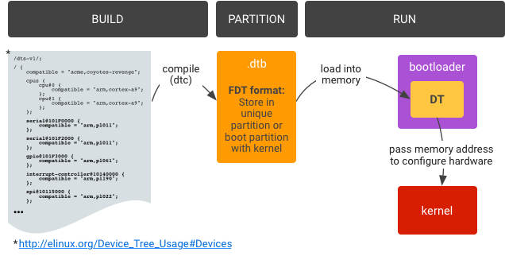

Параграф 4: Что такое Ядро
Что такое ядро? Ядро операционной системы - в данном случае Android - это компонент, который помогает вашим приложениям взаимодействовать с вашим оборудованием. Оно управляет системными ресурсами, при необходимости обменивается данными с внешними устройствами и т. д. Android использует вариант ядра Linux, содержит базовый набор драйверов, которые необходимы для работы устройства. Поскольку ядро Android по умолчанию является производным от ядра Linux, можно с уверенностью сказать, что ядро Android также является монолитным. Рассмотрим пример: предположим, вы установили приложение для съемки фотографий. Для этого вам нужно получить доступ к камере вашего телефона. Но приложение не может этого сделать. Оно не может напрямую получить доступ к камере, чтобы делать фотографии. Вместо этого оно посылает запрос ядру, и ядро предоставляет доступ к камере. Без ядра для приема и отправки информации разработчикам пришлось бы писать код для каждого отдельного события для каждого отдельного элемента ПО вашего устройства. С ядром все, что им нужно делать, это взаимодействовать с ним через API системы Android, а разработчикам нужно только заставить ПО устройства взаимодействовать с ядром.

Почему ядро должно постоянно обновляться?
Ядро Linux постоянно меняется. Множество улучшений попадает в ядро, чтобы сделать его более надежным, безопасным и продвинутым каждый день. Вполне логично, что вся эта дельта улучшений попадает в ядро Android при любой возможности. Многие производители сохраняют ядро неизменным при незначительном обновлении Android, в основном потому, что обновление ядра (называемое BSP - Board Support package) часто приходит от производителя чипсета (TI, Samsung, Qualcomm, Mediatek и т.д.). При изменении ядра для обновления Android, часто требуется много тестирования и обеспечения стабильности. Поэтому это часто приводит к задержке обновлений Android, а иногда и к прекращении обновлений ядра, когда поставщики чипсетов не поддерживают их. Так же это объясняет, почему производители не очень часто обновляют версию ядра вместе с версией Android.
Дерево устройства (DT)
Дерево устройств (DT) - это структура данных, состоящая из именованных узлов и свойств, которые описывают оборудование которое, в обычных условиях, обнаружить невозможно. Операционные системы, такие как ядро Linux, используемое в Android, используют DT для поддержки широкого спектра аппаратных конфигураций, используемых в устройствах на базе Android. Производители оборудования снабжают ядро своими собственными DT, которые Linux затем компилирует в файл Device Tree Blob (DTB), используемый загрузчиком.
Оверлей дерева устройства (DTO) позволяет наложить центральный блок дерева устройств (DTB) на дерево устройств. Загрузчик, использующий DTO, может поддерживать DT системы-на-чипе (SoC) и динамически накладывать DT для конкретного устройства, добавляя узлы в дерево и внося изменения в свойства существующего дерева.

Терминология
DT— Дерево устройстваDTB— Блоб дерева устройстваDTBO— Блоб дерева устройства для оверлеяDTC— Компилятор дерева устройстваDTO— Оверлей дерева устройстваDTS— Исходник дерева устройстваFDT— Сплющенное дерево устройства. Двоичный формат, содержащийся в блоб-файле .dtb
Типы ядра
-
Android Common Kernel (ACK) Ядро, которое находится ниже ядра LTS и включает в себя исправления, представляющие интерес для сообщества Android, которые не были объединены в основные ядра Linux или ядра с длительной поддержкой (LTS). Более новые ACK (версии 5.4 и выше) также известны как ядра GKI, поскольку они поддерживают разделение кода Generic Kernel, не зависящего от аппаратного обеспечения, и модулей GKI, не зависящих от аппаратного обеспечения.
-
Android Open Source Project (AOSP) kernel
-
Feature kernel Ядро, для которого гарантированно реализованы функции релиза платформы. Например, в Android 12 двумя функциональными ядрами были android12-5.4 и android12-5.10. Функции Android 12 не могут быть перенесены обратно на ядра 4.19 после обновления; набор функций будет аналогичен устройству, которое было запущено с 4.19 на R и обновлено до S).
-
Generic Core Kernel Часть ядра GKI, которая является общей для всех устройств.
-
Generic Kernel Image (GKI) kernel Любое более новое (5.4 и выше) ядро ACK (в настоящее время только aarch64). Это ядро состоит из двух частей: ядро GKI с общим для всех устройств кодом и модули ядра GKI, разработанные Google, которые могут быть динамически загружены на устройства, где это необходимо.
-
Launch Kernel Ядро, которое подходит для запуска устройства для данного выпуска платформы Android. Например, в Android 12 допустимыми ядрами для запуска были 4.19, 5.4 и 5.10.
-
Long Term Supported (LTS) kernel Ядро Linux, которое поддерживается от 2 до 6 лет. Ядра LTS выпускаются раз в год и являются основой для каждого из ACK Google.
Типы ветвей ядра
-
ACK KMI kernel branch Ветвь, с которой собираются ядра GKI. Например, android12-5.10 и android13-5.15.
-
Android-mainline Основная ветвь разработки для функций Android. Когда новое ядро LTS объявляется выше по течению, соответствующее новое ядро GKI ответвляется от android-mainline.
-
Linux mainline Основная ветвь разработки для вышестоящих ядер Linux, включая ядра LTS.